使用 核武器 的 出口 gizmo 命令，您可以导出一组节点，并明确控制艺术家可以编辑哪些控件，以确保 gizmo 中的进程得到一致应用。
要创建小控件:
| 1。 | 选择要包括在 gizmo 中的节点。 |
| 2. | 选择 其他 > 集团 从工具栏 (或按 Ctrl / Cmd + G ) 将节点分组。 |
| 3. | 您可能希望通过在 “组属性” 面板 “标题” 字段中输入新名称来重命名组。此步骤是可选的，对保存的 gizmo 没有影响。然而，给该组一个与您打算用于 gizmo 的名称通常是个好主意。 |
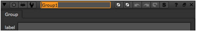
| 4. | 要控制艺术家可以调整哪些控件，请按照下面的说明操作 管理 Gizmo 控件 下面。 |
| 5. | 单击 导出为 gizmo 按钮。 |
| 6. | 在出现的文件浏览器中，单击 家 。类型 。核武器/ 在文件浏览器底部显示的路径之后。 |
| 7. | 在路径后输入名称，并附加 。Gizmo 名称后的扩展。这是写入使用 gizmo 的任何已保存脚本的命令的名称。用大写字母开头是一个好主意，也是常见的做法，因为 核武器 使用该命令表示该命令是节点或 gizmo。 |
| 8。 | 单击 保存 . |
注意: 核武器 不允许你 覆盖 和 另存为 默认情况下，不将 gizmo 复制到组。如果你想允许这种行为，所以艺术家不需要在编辑 gizmo 之前复制它，将 NUKE_ALLOW_GIZMO_SAVING 环境变量设置为 1 。请参阅 设置环境变量 欲了解更多信息。
您可以通过两种不同的方式将控件添加到 gizmo (此时它只是一个组节点):
• 通过从默认存在于组节点内的节点的控件中拾取和编辑控件。例如，如果组节点包含级别节点，则可以将任何级别节点控件添加到 gizmo “属性” 面板中。
• 通过将自己创建的控件添加到 gizmo 属性面板。
| 1。 | 在 “组属性” 面板的深灰色背景上单击鼠标右键，然后选择 管理用户旋钮 。将打开以下对话框。 |
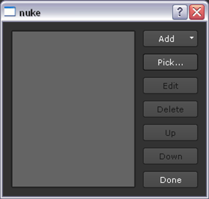
| 2. | 要选择要让用户控制的控件，请单击 选择 按钮。这将打开一个对话框，列出组包含的所有节点。 |
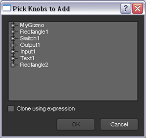
根据需要展开列表项，以查看可以包含在 gizmo 控件中的控件。选择一个控件并单击 好 。您也可以选择多个控件 Ctrl / Cmd 单击它们，或选择一系列控件 转变 点击。
此时，一个名为 用户 显示在 “组属性” 面板中。您选择的控件已添加到此选项卡。在我们的示例中，我们选择了 尺寸 控制文本节点。
该控件也已添加到 “管理用户旋钮” 对话框中，供您编辑。
| 3. | 要编辑添加的控件，请打开 管理用户旋钮 对话框并从列表中选择控件。单击 编辑 . |
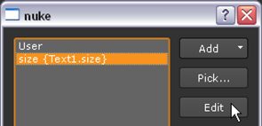
在大多数情况下，您可以编辑以下内容:
• 名称 -在这里给新控件一个唯一的名称。每当您想从脚本或通过表达式引用控件时，都需要使用此名称。名称只能包含字母和数字。不允许使用空格或标点。此字段不能留空。
• 标签 -无论您在这里输入什么，都显示在 gizmo 属性面板中的控件左侧 (或者，在按钮的情况下，显示在按钮上)。如果你把这个空的，无论是在 名称 字段也用作标签。
在 标签 复选框、 Tcl 脚本按钮和 Python 脚本按钮的字段，您也可以使用 HTML。例如，要让文本以粗体显示，您可以输入 文本 </b> .
要使用 HTML 向复选框或 Tcl/Python 按钮添加图标，您可以输入 <Img src = "Colorwheel.png"/> 在 标签 字段。这增加了 核武器 色轮图标。只要将图标保存在插件路径目录中，您也可以使用自己的图标。大多数常见的图像格式都有效，但我们建议使用。Png 文件。
请注意，HTML 已经被更改为稍微不标准的形式，其中换行符很重要。如果数据中有换行符，标签中将显示新行。
• 隐藏 -选中此选项可对用户隐藏控件。如果您希望创建一个新控件以包含一个复杂的表达式，然后其他控件可以重复引用该表达式，这将非常有用。
• 开始新行 -如果希望控件显示在 gizmo 属性面板中与上一个控件相同的行上，请取消选中此选项。
• 工具提示 -在这里输入一个简短的帮助文本。当用户将鼠标指向控件时，它将与名称一起出现在弹出工具提示中。如果你不提供工具提示，无论是在 名称 字段用作工具提示。
| 4. | 如有必要，重复前三个步骤，向组节点 (未来 gizmo) 添加更多控件。 |
| 5. | 在 “组节点属性” 面板中，这些控件的列出顺序与它们在 管理用户旋钮 对话框。要在 “属性” 面板中向上或向下移动控件，请在对话框中选择该控件并使用 向上 和 下来 按钮。 |
| 6. | 单击 导出为 gizmo 按钮。 |
| 7. | 在出现的文件浏览器中，单击 家 。类型 。核武器/ 在文件浏览器底部显示的路径之后。 |
| 8。 | 在路径后输入名称，并附加 。Gizmo 名称后的扩展。这是写入使用 gizmo 的任何已保存脚本的命令的名称。用大写字母开头是一个好主意，也是常见的做法，因为 核武器 使用该命令表示该命令是节点或 gizmo。 |
| 9. | 单击 保存 . |
| 1. | Right-click on the dark gray background of the Group properties panel and select Manage User Knobs . The following dialog opens. |
| 2. | 要向组 (gizmo) 控件添加新控件、制表符、静态文本或分隔线，请单击 添加 在 管理用户旋钮 对话框并选择要添加的选项。这将打开一个对话框，您可以在其中编辑添加的控件、选项卡或静态文本。在大多数情况下，您可以编辑以下内容: |
• Name - Give the new control a unique name here. You need to use this name whenever you want to reference the control from scripts or via expressions. The name can only contain letters and digits. Spaces or punctuation are not allowed. This field cannot be left empty.
• 标签 -无论您在这里输入什么，都会出现在 gizmo 属性面板中控件的左侧。如果你把这个空的，无论是在 名称 字段也用作标签。
In the Label fields of check boxes, Tcl script buttons, and Python script buttons, you can also use HTML. For example, to have your text appear in bold, you can enter <b>text</b> .
要使用 HTML 向复选框或 Tcl/Python 按钮添加图标，您可以输入 <Img src = "Colorwheel.png"/> 在 标签 字段。这增加了 核武器 色轮图标。只要将图标保存在插件路径目录中，您也可以使用自己的图标。最常见的图像格式可以工作，但我们建议使用。Png 文件。
Note that the HTML has been changed to a slightly non-standard form where newlines are significant. If there is a newline character in your data, a new line is displayed in the label.
• Hide - Check this to hide the control from the users. This can be useful if you want to make a new control to contain a complex expression that you can then refer to repeatedly by other controls.
• 开始新行 -如果希望控件显示在 “组属性” 面板中与上一个控件相同的行上，请取消选中此选项。
• Tooltip - Enter a short help text here. It appears, along with the Name, in a pop-up tool tip when the user points the mouse at the control. If you do not provide a tool tip, whatever is in the Name field is used as the tool tip.
| 3. | 使用表达式将刚刚创建的控件链接到节点及其在组节点内的控件。这很重要，因为要使新控件执行任何操作，您需要在组中的节点上使用其他控件中的表达式来引用它。有关更多信息，请参见下面的示例并参考 表情 . |
| 4. | 如有必要，重复前四个步骤，向组节点 (未来 gizmo) 添加更多控件。 |
| 5. | 在 “组节点属性” 面板中，这些控件的列出顺序与它们在 管理用户旋钮 对话框。要在 “属性” 面板中向上或向下移动控件，请在对话框中选择该控件并使用 向上 和 下来 按钮。 |
| 6. | Click the export as gizmo button. |
| 7. | In the file browser that appears, click Home . Type .nuke/ after the path displayed at the bottom of the file browser. |
| 8. | Enter a name after the path, and append a .gizmo extension after the name. This is the name of the command that is written to any saved script that’s using the gizmo. It’s a good idea, and common practice, to begin the name with a capital letter, because Nuke uses this as an indication that the command is a node or a gizmo. |
| 9. | Click Save . |
| 1。 | 在 “组属性” 面板的深灰色背景上单击鼠标右键，然后选择 管理用户旋钮 . |
| 2. | 在打开的对话框中，从列表中选择要删除的控件，然后单击 删除 . |
| 3. | 要删除整个选项卡，请选择选项卡上的所有控件以及选项卡名称，然后单击 删除 . |
下面是一些如何为小工具创建新控件的示例。要试用它们，请做以下准备:
| 1。 | 选择 绘制 > 文本 和 绘制 > 矩形 。创建以下设置: |
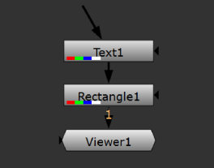
| 2. | 双击 Rectangle1 节点。 |
| 3. | 在查看器中，调整矩形的大小并重新定位矩形，直到它看起来像以下内容: |
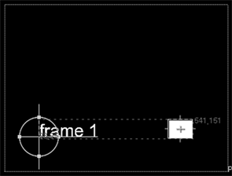
| 4. | 在 Rectangle1 属性面板中，转到 颜色 标签。点击 4 按钮显示多个值，而不是滑块。输入 1 作为的值 r ,和 0 作为的值 b , g 和 一个 。这将矩形的颜色从白色更改为红色。 |
| 5. | 复制 Rectangle1 节点并将其粘贴到同一个脚本中。创建以下连接: |
| 6. | 双击 Rectangle2 节点，将矩形的颜色从红色改为绿色 (r 0，g 1，b 0，a 0)。 |
| 7. | 选择 合并 > 开关 添加交换机节点。创建以下连接: |
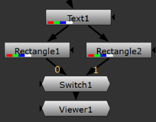
| 8。 | 选择 Text1 、 Rectangle1 、 Rectangle2 和 Switch1 节点，然后按 Ctrl / Cmd + G 把他们分组。此组是我们在以下示例中添加控件的 gizmo。 |
| 9. | 从中删除原始的四个节点 节点图 标签。 |
| 10. | 选择组节点并将查看器附加到该节点。 |
示例 1
在这个例子中，我们添加一个名为 版本 到组节点控件。此控件是一个输入字段。在字段中输入的内容由 Text1 节点调用，并在查看组输出时显示在查看器中。
| 1。 | 打开 “组属性” 面板，在深灰色背景上单击鼠标右键。选择 管理用户旋钮 . |
| 2. | 在打开的对话框中，选择 添加 > 文本输入旋钮 将文本输入字段控件添加到组属性面板。 |
| 3. | 输入 版本 作为 名称 为了控制, 版本 作为 标签 ,和 在此输入版本号 作为 工具提示 。单击 好 和 完成 关闭对话框。 |
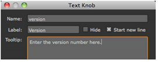
此步骤创建了一个名为 用户 在组节点控件中。默认情况下，您添加或拾取的所有控件都将添加在此选项卡上。
正如你所看到的, 版本 控制现在在那里。
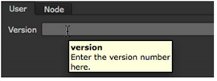
| 4. | 在 群 1 节点图 选项卡上，双击 Text1 节点以打开其控件。在 消息 字段中，输入以下表达式: 【价值版本】 。此表达式调用名为的控件 版本 您在上一步中创建的。因此，无论是在 版本 组节点的字段 (例如, V03 )，显示为 Text1 节点的结果。 |
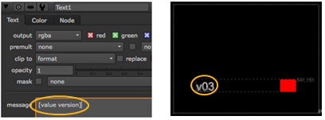
示例 2
此示例教您创建一个 checkbox 控件，用户可以使用该控件指定是要显示还是隐藏上一示例中添加的版本号。
| 1。 | 在 “组属性” 面板中，在深灰色背景上单击鼠标右键，然后选择 管理用户旋钮 . |
| 2. | 在打开的对话框中，选择 添加 > 复选框 将 checkbox 控件添加到组属性面板。 |
| 3. | 输入 隐藏 作为 名称 为了控制, 隐藏版本号 作为 标签 ,和 选中此选项以隐藏版本号 作为 工具提示 . |
| 4. | 要将新控件显示在版本控件 (在前面的示例中创建) 旁边，而不是显示在它自己的行上，请取消选中 开始新行 。单击 好 和 完成 关闭对话框。 |
您创建的控件现在显示在 “组属性” 面板中。

| 5. | 在 Text1 控件中，转到 节点 标签。右键单击 禁用 控制和选择 添加表达式 . |
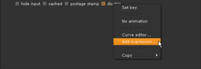
| 6. | 在 表达 字段，输入 隐藏 (或者，如果你想清楚控件在封闭组中，你也可以使用 Parent.hideversion )。这将调用您在步骤 2 和 3 中创建的控件。单击 好 . |
从现在开始，无论何时 隐藏版本号 在组控件中被选中，Text1 节点被禁用，您看不到它将创建的版本号。

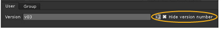
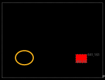
示例 3
在这个例子中，我们添加一个标记为 地位 到组控件。此控件是一个带有两个选项的下拉菜单: 完成 和 未完成 。当 完成 选中后，将显示绿色矩形。当 未完成 选中后，您将看到红色矩形。
| 1. | In the Group properties panel, right-click on the dark gray background and select Manage User Knobs . |
| 2. | 在打开的对话框中，选择 添加 > 下拉选择 将下拉菜单控件添加到组属性面板。 |
| 3. | 输入 地位 作为 名称 对于控制和 地位 作为 标签 。在 菜单项 字段中，列出您希望出现在下拉菜单中的项目-在这种情况下, 完成 和 未完成 . |
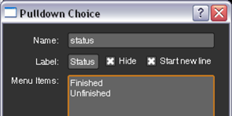
最后，输入 在此选择生产状态 作为 工具提示 。单击 好 和 完成 关闭对话框。
的 地位 控件现在应该出现在组控件中。
| 4. | 在 群 1 节点图 选项卡上，双击 Switch1 节点以打开其控件。右键单击 其中 字段并选择 添加表达式 . |
| 5. | 在打开的对话框中，输入以下表达式: 状态 = = 0 (或, 父级。状态 = = 0 )。此表达式调用名为的控件 地位 您在此示例中前面创建的。对于下拉菜单，第一项是 0 ,下一个 1 ,下一个 2 等等。 |
从现在开始，无论何时 完成 被选中 地位 ,绿色矩形显示。当 未完成 选中后，将显示红色矩形。
示例 4
此示例演示如何以视觉方式对为 “组属性” 面板创建的控件进行分组和重新排列。您可以通过重命名 用户 选项卡，并使用静态文本和分隔线对选项卡上的控件进行分组。
首先，我们将重命名 用户 “组属性” 面板中的选项卡:
| 1. | In the Group properties panel, right-click on the dark gray background and select Manage User Knobs . |
| 2. | 在打开的对话框中，选择 用户 并单击 编辑 . |
| 3. | 在 标签 字段中，输入选项卡的新名称，例如, 版本和状态 。单击 好 和 完成 关闭对话框。 |
如果您现在查看组控件，您会注意到 用户 选项卡已重命名为 版本和状态 .
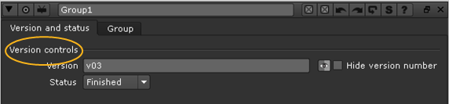
接下来，我们将组节点的两个版本控件分组在一个名为 版本控制 :
| 1. | In the Group properties panel, right-click on the dark gray background and select Manage User Knobs . |
| 2. | 在打开的对话框中，选择 添加 > 文本 将文本添加到组属性面板。 |
| 3. | 输入 版本控制 作为 名称 对于控制和 版本控制 作为 标签 。单击 好 和 完成 关闭对话框。 |
这将添加文本 版本控制 到 “组属性” 面板。然而，文本不会出现在我们希望它出现的地方: 版本 和 隐藏版本号 控制。让我们把它向上移动。
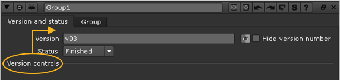
| 4. | 再次右键单击 “组属性” 面板，然后选择 管理用户旋钮 . |
| 5. | 选择 [版本控制] 从列表中单击 向上 三次。单击 完成 . |
文本现在应该出现在 “组属性” 面板的顶部，版本控件的上方。
最后，我们将在版本控件和 地位 控制:
| 1。 | 在 “组属性” 面板中，在深灰色背景上单击鼠标右键，然后选择 管理用户旋钮 再次。 |
| 2. | 在打开的对话框中，选择 添加 > 分隔线 在 “组属性” 面板中添加用于分割控件的行。 |
| 3. | 从 “管理用户旋钮” 对话框中选择该行，该行显示为 未命名 . |
| 4. | 单击 向上 按钮一次移动之间的线 隐藏版本号 和 地位 控制。单击 完成 . |
如果现在打开组控件，您会注意到这些控件之间有一条线。
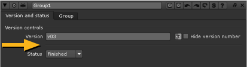
希望上面的例子给了你一个如何为你的小工具创建用户控件的想法。一旦你拥有了所有你需要的控制，记得保存你的小玩意。
要获取 gizmo，请创建一个引用 gizmo 的菜单选项 (请参见 定义自定义菜单和工具栏 ),
OR
指示艺术家通过以下方式调用 gizmo:
• 按 X 在节点图形或属性面板上输入 gizmo 名称 (没有扩展) 在打开的对话框中作为 Tcl 命令。
• 打开脚本编辑器并输入 Nuke.load (“ Gizmo 名称 ”) 在哪里 Gizmo 名称 代表不带扩展的 gizmo 的名称。
• 选择 其他 > 所有插件 > 更新 一旦这一切都完成了 标签 在节点图上输入 gizmo 名称。
|
|